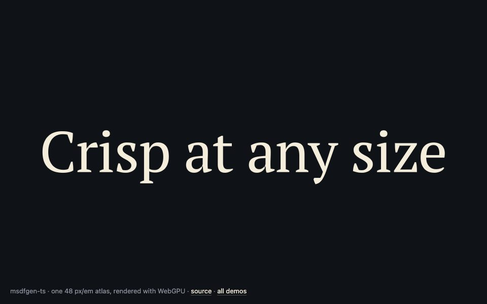
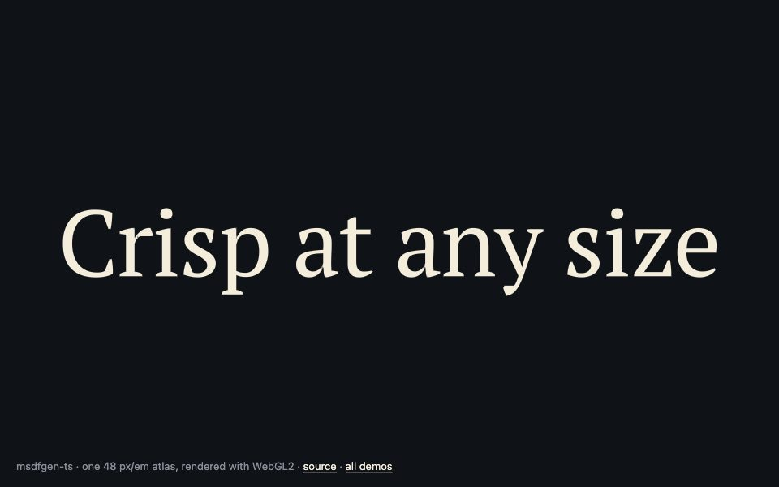
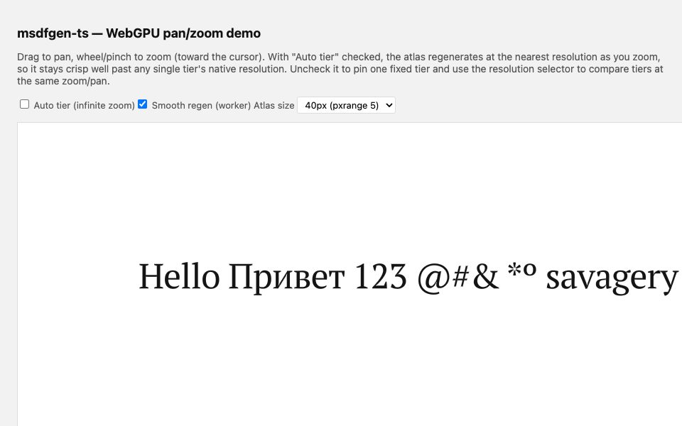
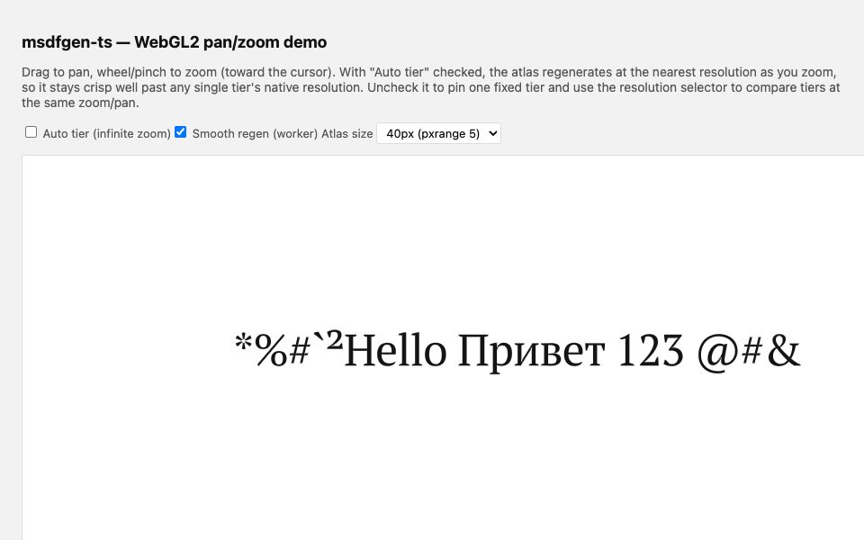
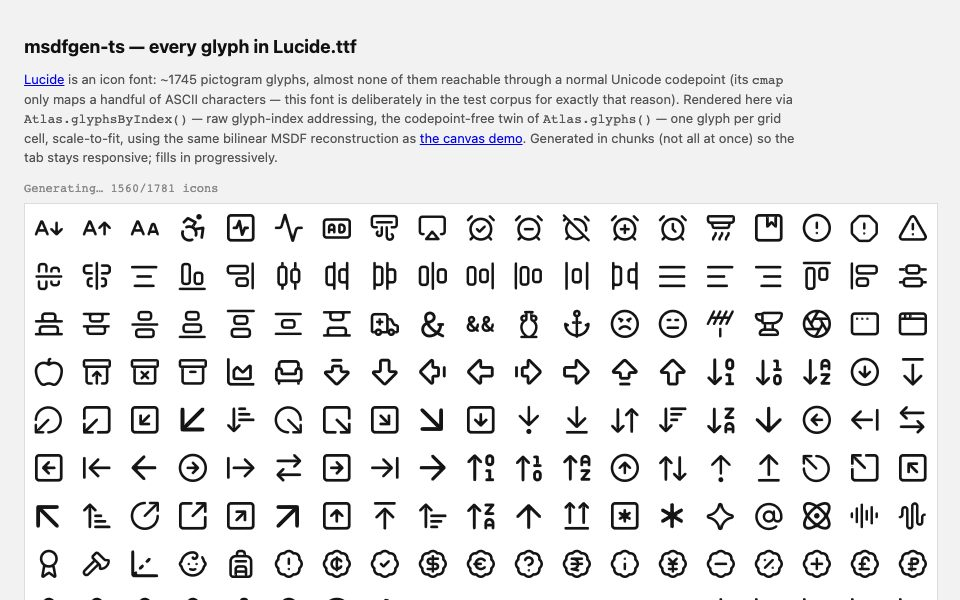
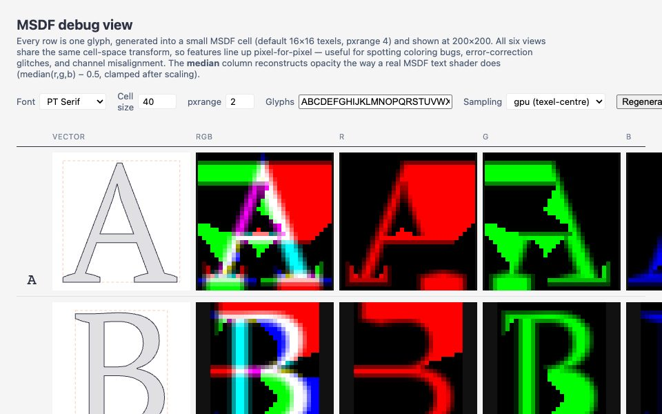

14 KBgzipped, one tiny dependency
0 WASMplain TypeScript, runs anywhere JS does
≤ 1e-4max difference from C++ msdfgen per texel
1158golden comparisons against the reference, in CI
Three calls to an atlas
Parse the font, build the atlas, lay out your text. Upload one texture, draw one quad per glyph with the standard median shader.
npm install msdfgen-ts
import { Font, Atlas } from "msdfgen-ts"; const font = new Font(await (await fetch("Roboto.ttf")).arrayBuffer()); const atlas = new Atlas(font, { pixelsPerEm: 48, pxrange: 4 }); const { glyphs } = atlas.layout("Hello, world!"); // atlas.texture: RGBA8, ready for writeTexture / texImage2D // glyphs: position + atlas rect for every quad, kerning applied
Demos

Hello, WebGPUstart here
The smallest complete example: font, atlas, one draw call. Made to be copied.

Hello, WebGL2start here
The same minimal example over WebGL2, for browsers without WebGPU.

Pan and zoomWebGPU
Drag and wheel through a paragraph, with selectable atlas resolutions and optional automatic tier switching.

Pan and zoomWebGL2
The same pan and zoom over WebGL2.

Every Lucide iconicon font
About 1,700 icons from one font, addressed by glyph index.

Inside one glyphdebug view
Outline, edge colors, each channel and the reconstructed result, side by side.
Under the hood
- Performance report Per-glyph generation time, measured in your browser.
- CPU reconstruction The same atlas decoded on the CPU, no GPU involved.
- WebGPU test renderer Instanced quads at several sizes, used for visual checks.
- WebGL2 test renderer The WebGL2 twin, used for screenshot checks.